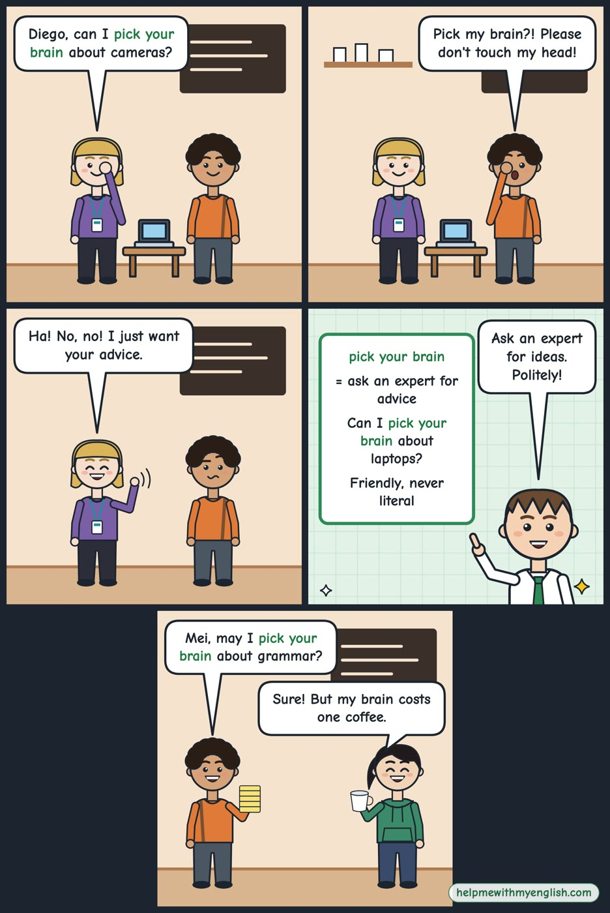

pick someone's brain
To ask someone who knows a lot about a subject for advice or ideas.
Can I pick your brain about which laptop to buy?
Tip: Use it as 'pick someone's brain (about/on something)'; it's friendly and a little informal, so it works best with colleagues and friends, and the person is usually asked for a short chat, not a favour that takes hours.
Hear it in conversation
Workbook
1. What does it mean?
In this conversation, what does "pick your brain" mean?
2. Fill the gap
My cousin runs a small bakery, so I'm going to before I open my own café.
3. Choose the best reply
Amira: I'm thinking of renting out my flat while I travel, but I have no idea where to start. You've done it, haven't you?
4. Your turn: speak
Tell me about a time you asked someone for advice before making a big decision.
Show an example answer
Last year I wanted to switch careers, so I asked an old colleague who already worked in the field if I could pick her brain over lunch. She gave me honest advice about salaries and training courses that I couldn't have found online. It made my decision much easier.
Answer key: pick someone's brain
- 1. A. Ask someone with experience for advice and ideas
- 2. pick her brain
- 3. A. Yes, I have. Want to meet up so you can pick my brain about it?
- 4. Example: Last year I wanted to switch careers, so I asked an old colleague who already worked in the field if I could pick her brain over lunch. She gave me honest advice about salaries and training courses that I couldn't have found online. It made my decision much easier.
See it in a comic
